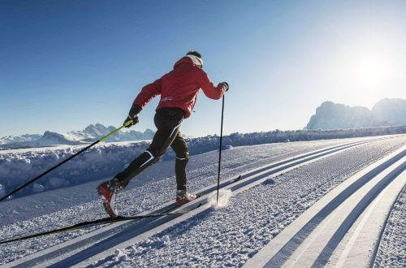

Добро пожаловать!
Вы находитесь на сайте, посвященном технике лыжных ходов. Данный сайт создал студент Иркутского Национального Исследовательского Технического Университета (ИРНИТУ) Попов Михаил (ссылка на его ВК).
Лыжный спорт, а конкретнее беговые лыжи, многими считается лучшим видом спорта в мире, и на то есть свои причины:
Лыжный спорт, а конкретнее беговые лыжи, многими считается лучшим видом спорта в мире, и на то есть свои причины:
- Лыжный спорт невероятно полезен для здоровья, поскольку тренировки на лыжах развивают практически все мышцы тела, к тому же тренировки проводятся на свежем воздухе
- Лыжный спорт - один из самых массовых видов спорта (чего стоит одна только «Лыжня России» - самое массовое спортивное мероприятие в стране)
- Лыжный спорт положительно влияет на психоэмоциональное состояние человека, в результате чего человеку становится проще бороться со всевозможными жизненными трудностями

Лыжи популярны во всех уголках мира